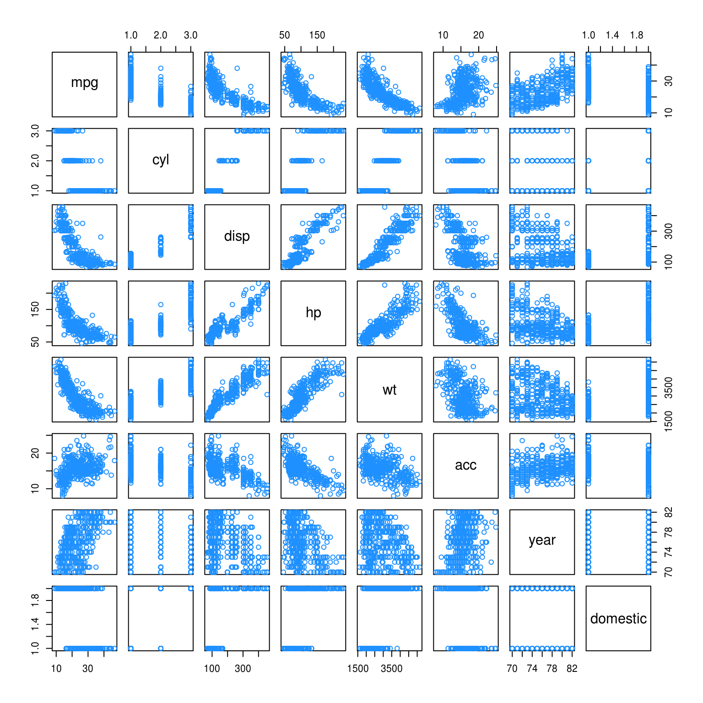

Chapter 15 Variable Selection and Model Building
“Choose well. Your choice is brief, and yet endless.”
— Johann Wolfgang von Goethe
After reading this chapter you will be able to:
- Understand the trade-off between goodness-of-fit and model complexity.
- Use variable selection procedures to find a good model from a set of possible models.
- Understand the two uses of models: explanation and prediction.
Last chapter we saw how correlation between predictor variables can have undesirable effects on models. We used variance inflation factors to assess the severity of the collinearity issues caused by these correlations. We also saw how fitting a smaller model, leaving out some of the correlated predictors, results in a model which no longer suffers from collinearity issues. But how should we chose this smaller model?
This chapter, we will discuss several criteria and procedures for choosing a “good” model from among a choice of many.
15.1 Quality Criterion
So far, we have seen criteria such as \(R^2\) and \(\text{RMSE}\) for assessing quality of fit. However, both of these have a fatal flaw. By increasing the size of a model, that is adding predictors, that can at worst not improve. It is impossible to add a predictor to a model and make \(R^2\) or \(\text{RMSE}\) worse. That means, if we were to use either of these to chose between models, we would always simply choose the larger model. Eventually we would simply be fitting to noise.
This suggests that we need a quality criteria that takes into account the size of the model, since our preference is for small models that still fit well. We are willing to sacrifice a small amount of goodness-of-fit for obtaining a smaller model. We will look at three criteria that do this explicitly: \(\text{AIC}\), \(\text{BIC}\), and Adjusted \(R^2\). We will also look at one, Cross-Validated \(\text{RMSE}\), which implicitly considers the size of the model.
15.1.1 Akaike Information Criterion
The first criteria we will discuss is the Akaike Information Criterion, or \(\text{AIC}\) for short. (Note that, when Akaike first introduced this metric, it was simply called An Information Criterion. The A has changed meaning over the years.)
Recall, the maximized log-likelihood of a regression model can be written as
\[ \log L(\boldsymbol{\hat{\beta}}, \hat{\sigma}^2) = -\frac{n}{2}\log(2\pi) - \frac{n}{2}\log\left(\frac{\text{RSS}}{n}\right) - \frac{n}{2}, \]
where \(\text{RSS} = \sum_{i=1}^n (y_i - \hat{y}_i) ^ 2\) and \(\boldsymbol{\hat{\beta}}\) and \(\hat{\sigma}^2\) were chosen to maximize the likelihood.
Then we can define \(\text{AIC}\) as
\[ \text{AIC} = -2 \log L(\boldsymbol{\hat{\beta}}, \hat{\sigma}^2) + 2p = n + n \log(2\pi) + n \log\left(\frac{\text{RSS}}{n}\right) + 2p, \]
which is a measure of quality of the model. The smaller the \(\text{AIC}\), the better. To see why, let’s talk about the two main components of \(\text{AIC}\), the likelihood (which measures goodness-of-fit) and the penalty (which is a function of the size of the model).
The likelihood portion of \(\text{AIC}\) is given by
\[ -2 \log L(\boldsymbol{\hat{\beta}}, \hat{\sigma}^2) = n + n \log(2\pi) + n \log\left(\frac{\text{RSS}}{n}\right). \]
For the sake of comparing models, the only term here that will change is \(n \log\left(\frac{\text{RSS}}{n}\right)\), which is function of \(\text{RSS}\). The
\[ n + n \log(2\pi) \]
terms will be constant across all models applied to the same data. So, when a model fits well, that is, has a low \(\text{RSS}\), then this likelihood component will be small.
Similarly, we can discuss the penalty component of \(\text{AIC}\) which is,
\[ 2p, \]
where \(p\) is the number of \(\beta\) parameters in the model. We call this a penalty, because it is large when \(p\) is large, but we are seeking to find a small \(\text{AIC}\)
Thus, a good model, that is one with a small \(\text{AIC}\), will have a good balance between fitting well, and using a small number of parameters. For comparing models
\[ \text{AIC} = n\log\left(\frac{\text{RSS}}{n}\right) + 2p \]
is a sufficient expression, as \(n + n \log(2\pi)\) is the same across all models for any particular dataset.
15.1.2 Bayesian Information Criterion
The Bayesian Information Criterion, or \(\text{BIC}\), is similar to \(\text{AIC}\), but has a larger penalty. \(\text{BIC}\) also quantifies the trade-off between a model which fits well and the number of model parameters, however for a reasonable sample size, generally picks a smaller model than \(\text{AIC}\). Again, for model selection use the model with the smallest \(\text{BIC}\).
\[ \text{BIC} = -2 \log L(\boldsymbol{\hat{\beta}}, \hat{\sigma}^2) + \log(n) p = n + n\log(2\pi) + n\log\left(\frac{\text{RSS}}{n}\right) + \log(n)p. \]
Notice that the \(\text{AIC}\) penalty was
\[ 2p, \]
whereas for \(\text{BIC}\), the penalty is
\[ \log(n) p. \]
So, for any dataset where \(log(n) > 2\) the \(\text{BIC}\) penalty will be larger than the \(\text{AIC}\) penalty, thus \(\text{BIC}\) will likely prefer a smaller model.
Note that, sometimes the penalty is considered a general expression of the form
\[ k \cdot p. \]
Then, for \(\text{AIC}\) \(k = 2\), and for \(\text{BIC}\) \(k = \log(n)\).
For comparing models
\[ \text{BIC} = n\log\left(\frac{\text{RSS}}{n}\right) + \log(n)p \]
is again a sufficient expression, as \(n + n \log(2\pi)\) is the same across all models for any particular dataset.
15.1.3 Adjusted R-Squared
Recall,
\[ R^2 = 1 - \frac{\text{SSE}}{\text{SST}} = 1 - \frac{\sum_{i=1}^{n}(y_i - \hat{y}_i)^2}{\sum_{i=1}^{n}(y_i - \bar{y})^2}. \]
We now define
\[ R_a^2 = 1 - \frac{\text{SSE}/(n-p)}{\text{SST}/(n-1)} = 1 - \left( \frac{n-1}{n-p} \right)(1-R^2) \]
which we call the Adjusted \(R^2\).
Unlike \(R^2\) which can never become smaller with added predictors, Adjusted \(R^2\) effectively penalizes for additional predictors, and can decrease with added predictors. Like \(R^2\), larger is still better.
15.1.4 Cross-Validated RMSE
Each of the previous three metrics explicitly used \(p\), the number of parameters, in their calculations. Thus, they all explicitly limit the size of models chosen when used to compare models.
We’ll now briefly introduce overfitting and cross-validation.
make_poly_data = function(sample_size = 11) {
x = seq(0, 10)
y = 3 + x + 4 * x ^ 2 + rnorm(n = sample_size, mean = 0, sd = 20)
data.frame(x, y)
}set.seed(1234)
poly_data = make_poly_data()Here we have generated data where the mean of \(Y\) is a quadratic function of a single predictor \(x\), specifically,
\[ Y = 3 + x + 4 x ^ 2 + \epsilon. \]
We’ll now fit two models to this data, one which has the correct form, quadratic, and one that is large, which includes terms up to and including an eighth degree.
fit_quad = lm(y ~ poly(x, degree = 2), data = poly_data)
fit_big = lm(y ~ poly(x, degree = 8), data = poly_data)We then plot the data and the results of the two models.
plot(y ~ x, data = poly_data, ylim = c(-100, 400), cex = 2, pch = 20)
xplot = seq(0, 10, by = 0.1)
lines(xplot, predict(fit_quad, newdata = data.frame(x = xplot)),
col = "dodgerblue", lwd = 2, lty = 1)
lines(xplot, predict(fit_big, newdata = data.frame(x = xplot)),
col = "darkorange", lwd = 2, lty = 2)
We can see that the solid blue curve models this data rather nicely. The dashed orange curve fits the points better, making smaller errors, however it is unlikely that it is correctly modeling the true relationship between \(x\) and \(y\). It is fitting the random noise. This is an example of overfitting.
We see that the larger model indeed has a lower \(\text{RMSE}\).
sqrt(mean(resid(fit_quad) ^ 2))## [1] 17.61812sqrt(mean(resid(fit_big) ^ 2))## [1] 10.4197To correct for this, we will introduce cross-validation. We define the leave-one-out cross-validated RMSE to be
\[ \text{RMSE}_{\text{LOOCV}} = \sqrt{\frac{1}{n} \sum_{i=1}^n e_{[i]}^2}. \]
The \(e_{[i]}\) are the residual for the \(i\)th observation, when that observation is not used to fit the model.
\[ {e_{[i]} = y_{i} – \hat{y}_{[i]}} \]
That is, the fitted value is calculated as
\[ \hat{y}_{[i]} = x_i ^ \top \hat{\beta}_{[i]} \]
where \(\hat{\beta}_{[i]}\) are the estimated coefficients when the \(i\)th observation is removed from the dataset.
In general, to perform this calculation, we would be required to fit the model \(n\) times, once with each possible observation removed. However, for leave-one-out cross-validation and linear models, the equation can be rewritten as
\[ \text{RMSE}_{\text{LOOCV}} = \sqrt{\frac{1}{n}\sum_{i=1}^n \left(\frac{e_{i}}{1-h_{i}}\right)^2}, \]
where \(h_i\) are the leverages and \(e_i\) are the usual residuals. This is great, because now we can obtain the LOOCV \(\text{RMSE}\) by fitting only one model! In practice 5 or 10 fold cross-validation are much more popular. For example, in 5-fold cross-validation, the model is fit 5 times, each time leaving out a fifth of the data, then predicting on those values. We’ll leave in-depth examination of cross-validation to a machine learning course, and simply use LOOCV here.
Let’s calculate LOOCV \(\text{RMSE}\) for both models, then discuss why we want to do so. We first write a function which calculates the LOOCV \(\text{RMSE}\) as defined using the shortcut formula for linear models.
calc_loocv_rmse = function(model) {
sqrt(mean((resid(model) / (1 - hatvalues(model))) ^ 2))
}Then calculate the metric for both models.
calc_loocv_rmse(fit_quad)## [1] 23.57189calc_loocv_rmse(fit_big)## [1] 1334.357Now we see that the quadratic model has a much smaller LOOCV \(\text{RMSE}\), so we would prefer this quadratic model. This is because the large model has severely over-fit the data. By leaving a single data point out and fitting the large model, the resulting fit is much different than the fit using all of the data. For example, let’s leave out the third data point and fit both models, then plot the result.
fit_quad_removed = lm(y ~ poly(x, degree = 2), data = poly_data[-3, ])
fit_big_removed = lm(y ~ poly(x, degree = 8), data = poly_data[-3, ])
plot(y ~ x, data = poly_data, ylim = c(-100, 400), cex = 2, pch = 20)
xplot = seq(0, 10, by = 0.1)
lines(xplot, predict(fit_quad_removed, newdata = data.frame(x = xplot)),
col = "dodgerblue", lwd = 2, lty = 1)
lines(xplot, predict(fit_big_removed, newdata = data.frame(x = xplot)),
col = "darkorange", lwd = 2, lty = 2)
We see that on average, the solid blue line for the quadratic model has similar errors as before. It has changed very slightly. However, the dashed orange line for the large model, has a huge error at the point that was removed and is much different that the previous fit.
This is the purpose of cross-validation. By assessing how the model fits points that were not used to perform the regression, we get an idea of how well the model will work for future observations. It assess how well the model works in general, not simply on the observed data.
15.2 Selection Procedures
We’ve now seen a number of model quality criteria, but now we need to address which models to consider. Model selection involves both a quality criterion, plus a search procedure.
library(faraway)
hipcenter_mod = lm(hipcenter ~ ., data = seatpos)
coef(hipcenter_mod)## (Intercept) Age Weight HtShoes Ht Seated
## 436.43212823 0.77571620 0.02631308 -2.69240774 0.60134458 0.53375170
## Arm Thigh Leg
## -1.32806864 -1.14311888 -6.43904627Let’s return to the seatpos data from the faraway package. Now, let’s consider only models with first order terms, thus no interactions and no polynomials. There are eight predictors in this model. So if we consider all possible models, ranging from using 0 predictors, to all eight predictors, there are
\[ \sum_{k = 0}^{p - 1} {{p - 1} \choose {k}} = 2 ^ {p - 1} = 2 ^ 8 = 256 \]
possible models.
If we had 10 or more predictors, we would already be considering over 1000 models! For this reason, we often search through possible models in an intelligent way, bypassing some models that are unlikely to be considered good. We will consider three search procedures: backwards, forwards, and stepwise.
15.2.1 Backward Search
Backward selection procedures start with all possible predictors in the model, then considers how deleting a single predictor will effect a chosen metric. Let’s try this on the seatpos data. We will use the step() function in R which by default uses \(\text{AIC}\) as its metric of choice.
hipcenter_mod_back_aic = step(hipcenter_mod, direction = "backward")## Start: AIC=283.62
## hipcenter ~ Age + Weight + HtShoes + Ht + Seated + Arm + Thigh +
## Leg
##
## Df Sum of Sq RSS AIC
## - Ht 1 5.01 41267 281.63
## - Weight 1 8.99 41271 281.63
## - Seated 1 28.64 41290 281.65
## - HtShoes 1 108.43 41370 281.72
## - Arm 1 164.97 41427 281.78
## - Thigh 1 262.76 41525 281.87
## <none> 41262 283.62
## - Age 1 2632.12 43894 283.97
## - Leg 1 2654.85 43917 283.99
##
## Step: AIC=281.63
## hipcenter ~ Age + Weight + HtShoes + Seated + Arm + Thigh + Leg
##
## Df Sum of Sq RSS AIC
## - Weight 1 11.10 41278 279.64
## - Seated 1 30.52 41297 279.66
## - Arm 1 160.50 41427 279.78
## - Thigh 1 269.08 41536 279.88
## - HtShoes 1 971.84 42239 280.51
## <none> 41267 281.63
## - Leg 1 2664.65 43931 282.01
## - Age 1 2808.52 44075 282.13
##
## Step: AIC=279.64
## hipcenter ~ Age + HtShoes + Seated + Arm + Thigh + Leg
##
## Df Sum of Sq RSS AIC
## - Seated 1 35.10 41313 277.67
## - Arm 1 156.47 41434 277.78
## - Thigh 1 285.16 41563 277.90
## - HtShoes 1 975.48 42253 278.53
## <none> 41278 279.64
## - Leg 1 2661.39 43939 280.01
## - Age 1 3011.86 44290 280.31
##
## Step: AIC=277.67
## hipcenter ~ Age + HtShoes + Arm + Thigh + Leg
##
## Df Sum of Sq RSS AIC
## - Arm 1 172.02 41485 275.83
## - Thigh 1 344.61 41658 275.99
## - HtShoes 1 1853.43 43166 277.34
## <none> 41313 277.67
## - Leg 1 2871.07 44184 278.22
## - Age 1 2976.77 44290 278.31
##
## Step: AIC=275.83
## hipcenter ~ Age + HtShoes + Thigh + Leg
##
## Df Sum of Sq RSS AIC
## - Thigh 1 472.8 41958 274.26
## <none> 41485 275.83
## - HtShoes 1 2340.7 43826 275.92
## - Age 1 3501.0 44986 276.91
## - Leg 1 3591.7 45077 276.98
##
## Step: AIC=274.26
## hipcenter ~ Age + HtShoes + Leg
##
## Df Sum of Sq RSS AIC
## <none> 41958 274.26
## - Age 1 3108.8 45067 274.98
## - Leg 1 3476.3 45434 275.28
## - HtShoes 1 4218.6 46176 275.90We start with the model hipcenter ~ ., which is otherwise known as hipcenter ~ Age + Weight + HtShoes + Ht + Seated + Arm + Thigh + Leg. R will then repeatedly attempt to delete a predictor until it stops, or reaches the model hipcenter ~ 1, which contains no predictors.
At each “step”, R reports the current model, its \(\text{AIC}\), and the possible steps with their \(\text{RSS}\) and more importantly \(\text{AIC}\).
In this example, at the first step, the current model is hipcenter ~ Age + Weight + HtShoes + Ht + Seated + Arm + Thigh + Leg which has an AIC of 283.62. Note that when R is calculating this value, it is using extractAIC(), which uses the expression
\[ \text{AIC} = n\log\left(\frac{\text{RSS}}{n}\right) + 2p, \]
which we quickly verify.
extractAIC(hipcenter_mod) # returns both p and AIC## [1] 9.000 283.624n = length(resid(hipcenter_mod))
(p = length(coef(hipcenter_mod)))## [1] 9n * log(mean(resid(hipcenter_mod) ^ 2)) + 2 * p## [1] 283.624Returning to the first step, R then gives us a row which shows the effect of deleting each of the current predictors. The - signs at the beginning of each row indicates we are considering removing a predictor. There is also a row with <none> which is a row for keeping the current model. Notice that this row has the smallest \(\text{RSS}\), as it is the largest model.
We see that every row above <none> has a smaller \(\text{AIC}\) than the row for <none> with the one at the top, Ht, giving the lowest \(\text{AIC}\). Thus we remove Ht from the model, and continue the process.
Notice, in the second step, we start with the model hipcenter ~ Age + Weight + HtShoes + Seated + Arm + Thigh + Leg and the variable Ht is no longer considered.
We continue the process until we reach the model hipcenter ~ Age + HtShoes + Leg. At this step, the row for <none> tops the list, as removing any additional variable will not improve the \(\text{AIC}\) This is the model which is stored in hipcenter_mod_back_aic.
coef(hipcenter_mod_back_aic)## (Intercept) Age HtShoes Leg
## 456.2136538 0.5998327 -2.3022555 -6.8297461We could also search through the possible models in a backwards fashion using \(\text{BIC}\). To do so, we again use the step() function, but now specify k = log(n), where n stores the number of observations in the data.
n = length(resid(hipcenter_mod))
hipcenter_mod_back_bic = step(hipcenter_mod, direction = "backward", k = log(n))## Start: AIC=298.36
## hipcenter ~ Age + Weight + HtShoes + Ht + Seated + Arm + Thigh +
## Leg
##
## Df Sum of Sq RSS AIC
## - Ht 1 5.01 41267 294.73
## - Weight 1 8.99 41271 294.73
## - Seated 1 28.64 41290 294.75
## - HtShoes 1 108.43 41370 294.82
## - Arm 1 164.97 41427 294.88
## - Thigh 1 262.76 41525 294.97
## - Age 1 2632.12 43894 297.07
## - Leg 1 2654.85 43917 297.09
## <none> 41262 298.36
##
## Step: AIC=294.73
## hipcenter ~ Age + Weight + HtShoes + Seated + Arm + Thigh + Leg
##
## Df Sum of Sq RSS AIC
## - Weight 1 11.10 41278 291.10
## - Seated 1 30.52 41297 291.12
## - Arm 1 160.50 41427 291.24
## - Thigh 1 269.08 41536 291.34
## - HtShoes 1 971.84 42239 291.98
## - Leg 1 2664.65 43931 293.47
## - Age 1 2808.52 44075 293.59
## <none> 41267 294.73
##
## Step: AIC=291.1
## hipcenter ~ Age + HtShoes + Seated + Arm + Thigh + Leg
##
## Df Sum of Sq RSS AIC
## - Seated 1 35.10 41313 287.50
## - Arm 1 156.47 41434 287.61
## - Thigh 1 285.16 41563 287.73
## - HtShoes 1 975.48 42253 288.35
## - Leg 1 2661.39 43939 289.84
## - Age 1 3011.86 44290 290.14
## <none> 41278 291.10
##
## Step: AIC=287.5
## hipcenter ~ Age + HtShoes + Arm + Thigh + Leg
##
## Df Sum of Sq RSS AIC
## - Arm 1 172.02 41485 284.02
## - Thigh 1 344.61 41658 284.18
## - HtShoes 1 1853.43 43166 285.53
## - Leg 1 2871.07 44184 286.41
## - Age 1 2976.77 44290 286.50
## <none> 41313 287.50
##
## Step: AIC=284.02
## hipcenter ~ Age + HtShoes + Thigh + Leg
##
## Df Sum of Sq RSS AIC
## - Thigh 1 472.8 41958 280.81
## - HtShoes 1 2340.7 43826 282.46
## - Age 1 3501.0 44986 283.46
## - Leg 1 3591.7 45077 283.54
## <none> 41485 284.02
##
## Step: AIC=280.81
## hipcenter ~ Age + HtShoes + Leg
##
## Df Sum of Sq RSS AIC
## - Age 1 3108.8 45067 279.89
## - Leg 1 3476.3 45434 280.20
## <none> 41958 280.81
## - HtShoes 1 4218.6 46176 280.81
##
## Step: AIC=279.89
## hipcenter ~ HtShoes + Leg
##
## Df Sum of Sq RSS AIC
## - Leg 1 3038.8 48105 278.73
## <none> 45067 279.89
## - HtShoes 1 5004.4 50071 280.25
##
## Step: AIC=278.73
## hipcenter ~ HtShoes
##
## Df Sum of Sq RSS AIC
## <none> 48105 278.73
## - HtShoes 1 83534 131639 313.35The procedure is exactly the same, except at each step we look to improve the \(\text{BIC}\), which R still labels \(\text{AIC}\) in the output.
The variable hipcenter_mod_back_bic stores the model chosen by this procedure.
coef(hipcenter_mod_back_bic)## (Intercept) HtShoes
## 565.592659 -4.262091We note that this model is smaller, has fewer predictors, than the model chosen by \(\text{AIC}\), which is what we would expect. Also note that while both models are different, neither uses both Ht and HtShoes which are extremely correlated.
We can use information from the summary() function to compare their Adjusted \(R^2\) values. Note that either selected model performs better than the original full model.
summary(hipcenter_mod)$adj.r.squared## [1] 0.6000855summary(hipcenter_mod_back_aic)$adj.r.squared## [1] 0.6531427summary(hipcenter_mod_back_bic)$adj.r.squared## [1] 0.6244149We can also calculate the LOOCV \(\text{RMSE}\) for both selected models, as well as the full model.
calc_loocv_rmse(hipcenter_mod)## [1] 44.44564calc_loocv_rmse(hipcenter_mod_back_aic)## [1] 37.58473calc_loocv_rmse(hipcenter_mod_back_bic)## [1] 37.40564We see that we would prefer the model chosen via \(\text{BIC}\) if using LOOCV \(\text{RMSE}\) as our metric.
15.2.2 Forward Search
Forward selection is the exact opposite of backwards selection. Here we tell R to start with a model using no predictors, that is hipcenter ~ 1, then at each step R will attempt to add a predictor until it finds a good model or reaches hipcenter ~ Age + Weight + HtShoes + Ht + Seated + Arm + Thigh + Leg.
hipcenter_mod_start = lm(hipcenter ~ 1, data = seatpos)
hipcenter_mod_forw_aic = step(
hipcenter_mod_start,
scope = hipcenter ~ Age + Weight + HtShoes + Ht + Seated + Arm + Thigh + Leg,
direction = "forward")## Start: AIC=311.71
## hipcenter ~ 1
##
## Df Sum of Sq RSS AIC
## + Ht 1 84023 47616 275.07
## + HtShoes 1 83534 48105 275.45
## + Leg 1 81568 50071 276.98
## + Seated 1 70392 61247 284.63
## + Weight 1 53975 77664 293.66
## + Thigh 1 46010 85629 297.37
## + Arm 1 45065 86574 297.78
## <none> 131639 311.71
## + Age 1 5541 126098 312.07
##
## Step: AIC=275.07
## hipcenter ~ Ht
##
## Df Sum of Sq RSS AIC
## + Leg 1 2781.10 44835 274.78
## <none> 47616 275.07
## + Age 1 2353.51 45262 275.14
## + Weight 1 195.86 47420 276.91
## + Seated 1 101.56 47514 276.99
## + Arm 1 75.78 47540 277.01
## + HtShoes 1 25.76 47590 277.05
## + Thigh 1 4.63 47611 277.06
##
## Step: AIC=274.78
## hipcenter ~ Ht + Leg
##
## Df Sum of Sq RSS AIC
## + Age 1 2896.60 41938 274.24
## <none> 44835 274.78
## + Arm 1 522.72 44312 276.33
## + Weight 1 445.10 44390 276.40
## + HtShoes 1 34.11 44801 276.75
## + Thigh 1 32.96 44802 276.75
## + Seated 1 1.12 44834 276.78
##
## Step: AIC=274.24
## hipcenter ~ Ht + Leg + Age
##
## Df Sum of Sq RSS AIC
## <none> 41938 274.24
## + Thigh 1 372.71 41565 275.90
## + Arm 1 257.09 41681 276.01
## + Seated 1 121.26 41817 276.13
## + Weight 1 46.83 41891 276.20
## + HtShoes 1 13.38 41925 276.23Again, by default R uses \(\text{AIC}\) as its quality metric when using the step() function. Also note that now the rows begin with a + which indicates addition of predictors to the current model from any step.
hipcenter_mod_forw_bic = step(
hipcenter_mod_start,
scope = hipcenter ~ Age + Weight + HtShoes + Ht + Seated + Arm + Thigh + Leg,
direction = "forward", k = log(n))## Start: AIC=313.35
## hipcenter ~ 1
##
## Df Sum of Sq RSS AIC
## + Ht 1 84023 47616 278.34
## + HtShoes 1 83534 48105 278.73
## + Leg 1 81568 50071 280.25
## + Seated 1 70392 61247 287.91
## + Weight 1 53975 77664 296.93
## + Thigh 1 46010 85629 300.64
## + Arm 1 45065 86574 301.06
## <none> 131639 313.35
## + Age 1 5541 126098 315.35
##
## Step: AIC=278.34
## hipcenter ~ Ht
##
## Df Sum of Sq RSS AIC
## <none> 47616 278.34
## + Leg 1 2781.10 44835 279.69
## + Age 1 2353.51 45262 280.05
## + Weight 1 195.86 47420 281.82
## + Seated 1 101.56 47514 281.90
## + Arm 1 75.78 47540 281.92
## + HtShoes 1 25.76 47590 281.96
## + Thigh 1 4.63 47611 281.98We can make the same modification as last time to instead use \(\text{BIC}\) with forward selection.
summary(hipcenter_mod)$adj.r.squared## [1] 0.6000855summary(hipcenter_mod_forw_aic)$adj.r.squared## [1] 0.6533055summary(hipcenter_mod_forw_bic)$adj.r.squared## [1] 0.6282374We can compare the two selected models’ Adjusted \(R^2\) as well as their LOOCV \(\text{RMSE}\) The results are very similar to those using backwards selection, although the models are not exactly the same.
calc_loocv_rmse(hipcenter_mod)## [1] 44.44564calc_loocv_rmse(hipcenter_mod_forw_aic)## [1] 37.62516calc_loocv_rmse(hipcenter_mod_forw_bic)## [1] 37.251115.2.3 Stepwise Search
Stepwise search checks going both backwards and forwards at every step. It considers the addition of any variable not currently in the model, as well as the removal of any variable currently in the model.
Here we perform stepwise search using \(\text{AIC}\) as our metric. We start with the model hipcenter ~ 1 and search up to hipcenter ~ Age + Weight + HtShoes + Ht + Seated + Arm + Thigh + Leg. Notice that at many of the steps, some row begin with -, while others begin with +.
hipcenter_mod_both_aic = step(
hipcenter_mod_start,
scope = hipcenter ~ Age + Weight + HtShoes + Ht + Seated + Arm + Thigh + Leg,
direction = "both")## Start: AIC=311.71
## hipcenter ~ 1
##
## Df Sum of Sq RSS AIC
## + Ht 1 84023 47616 275.07
## + HtShoes 1 83534 48105 275.45
## + Leg 1 81568 50071 276.98
## + Seated 1 70392 61247 284.63
## + Weight 1 53975 77664 293.66
## + Thigh 1 46010 85629 297.37
## + Arm 1 45065 86574 297.78
## <none> 131639 311.71
## + Age 1 5541 126098 312.07
##
## Step: AIC=275.07
## hipcenter ~ Ht
##
## Df Sum of Sq RSS AIC
## + Leg 1 2781 44835 274.78
## <none> 47616 275.07
## + Age 1 2354 45262 275.14
## + Weight 1 196 47420 276.91
## + Seated 1 102 47514 276.99
## + Arm 1 76 47540 277.01
## + HtShoes 1 26 47590 277.05
## + Thigh 1 5 47611 277.06
## - Ht 1 84023 131639 311.71
##
## Step: AIC=274.78
## hipcenter ~ Ht + Leg
##
## Df Sum of Sq RSS AIC
## + Age 1 2896.6 41938 274.24
## <none> 44835 274.78
## - Leg 1 2781.1 47616 275.07
## + Arm 1 522.7 44312 276.33
## + Weight 1 445.1 44390 276.40
## + HtShoes 1 34.1 44801 276.75
## + Thigh 1 33.0 44802 276.75
## + Seated 1 1.1 44834 276.78
## - Ht 1 5236.3 50071 276.98
##
## Step: AIC=274.24
## hipcenter ~ Ht + Leg + Age
##
## Df Sum of Sq RSS AIC
## <none> 41938 274.24
## - Age 1 2896.6 44835 274.78
## - Leg 1 3324.2 45262 275.14
## - Ht 1 4238.3 46176 275.90
## + Thigh 1 372.7 41565 275.90
## + Arm 1 257.1 41681 276.01
## + Seated 1 121.3 41817 276.13
## + Weight 1 46.8 41891 276.20
## + HtShoes 1 13.4 41925 276.23We could again instead use \(\text{BIC}\) as our metric.
hipcenter_mod_both_bic = step(
hipcenter_mod_start,
scope = hipcenter ~ Age + Weight + HtShoes + Ht + Seated + Arm + Thigh + Leg,
direction = "both", k = log(n))## Start: AIC=313.35
## hipcenter ~ 1
##
## Df Sum of Sq RSS AIC
## + Ht 1 84023 47616 278.34
## + HtShoes 1 83534 48105 278.73
## + Leg 1 81568 50071 280.25
## + Seated 1 70392 61247 287.91
## + Weight 1 53975 77664 296.93
## + Thigh 1 46010 85629 300.64
## + Arm 1 45065 86574 301.06
## <none> 131639 313.35
## + Age 1 5541 126098 315.35
##
## Step: AIC=278.34
## hipcenter ~ Ht
##
## Df Sum of Sq RSS AIC
## <none> 47616 278.34
## + Leg 1 2781 44835 279.69
## + Age 1 2354 45262 280.05
## + Weight 1 196 47420 281.82
## + Seated 1 102 47514 281.90
## + Arm 1 76 47540 281.92
## + HtShoes 1 26 47590 281.96
## + Thigh 1 5 47611 281.98
## - Ht 1 84023 131639 313.35Adjusted \(R^2\) and LOOCV \(\text{RMSE}\) comparisons are similar to backwards and forwards, which is not at all surprising, as some of the models selected are the same as before.
summary(hipcenter_mod)$adj.r.squared## [1] 0.6000855summary(hipcenter_mod_both_aic)$adj.r.squared## [1] 0.6533055summary(hipcenter_mod_both_bic)$adj.r.squared## [1] 0.6282374calc_loocv_rmse(hipcenter_mod)## [1] 44.44564calc_loocv_rmse(hipcenter_mod_both_aic)## [1] 37.62516calc_loocv_rmse(hipcenter_mod_both_bic)## [1] 37.251115.2.4 Exhaustive Search
Backward, forward, and stepwise search are all useful, but do have an obvious issue. By not checking every possible model, sometimes they will miss the best possible model. With an extremely large number of predictors, sometimes this is necessary since checking every possible model would be rather time consuming, even with current computers.
However, with a reasonably sized dataset, it isn’t too difficult to check all possible models. To do so, we will use the regsubsets() function in the R package leaps.
library(leaps)
all_hipcenter_mod = summary(regsubsets(hipcenter ~ ., data = seatpos))A few points about this line of code. First, note that we immediately use summary() and store those results. That is simply the intended use of regsubsets(). Second, inside of regsubsets() we specify the model hipcenter ~ .. This will be the largest model considered, that is the model using all first-order predictors, and R will check all possible subsets.
We’ll now look at the information stored in all_hipcenter_mod.
all_hipcenter_mod$which## (Intercept) Age Weight HtShoes Ht Seated Arm Thigh Leg
## 1 TRUE FALSE FALSE FALSE TRUE FALSE FALSE FALSE FALSE
## 2 TRUE FALSE FALSE FALSE TRUE FALSE FALSE FALSE TRUE
## 3 TRUE TRUE FALSE FALSE TRUE FALSE FALSE FALSE TRUE
## 4 TRUE TRUE FALSE TRUE FALSE FALSE FALSE TRUE TRUE
## 5 TRUE TRUE FALSE TRUE FALSE FALSE TRUE TRUE TRUE
## 6 TRUE TRUE FALSE TRUE FALSE TRUE TRUE TRUE TRUE
## 7 TRUE TRUE TRUE TRUE FALSE TRUE TRUE TRUE TRUE
## 8 TRUE TRUE TRUE TRUE TRUE TRUE TRUE TRUE TRUEUsing $which gives us the best model, according to \(\text{RSS}\), for a model of each possible size, in this case ranging from one to eight predictors. For example the best model with four predictors (\(p = 5\)) would use Age, HtShoes, Thigh, and Leg.
all_hipcenter_mod$rss## [1] 47615.79 44834.69 41938.09 41485.01 41313.00 41277.90 41266.80 41261.78We can obtain the \(\text{RSS}\) for each of these models using $rss. Notice that these are decreasing since the models range from small to large.
Now that we have the \(\text{RSS}\) for each of these models, it is rather easy to obtain \(\text{AIC}\), \(\text{BIC}\), and Adjusted \(R^2\) since they are all a function of \(\text{RSS}\) Also, since we have the models with the best \(\text{RSS}\) for each size, they will result in the models with the best \(\text{AIC}\), \(\text{BIC}\), and Adjusted \(R^2\) for each size. Then by picking from those, we can find the overall best \(\text{AIC}\), \(\text{BIC}\), and Adjusted \(R^2\).
Conveniently, Adjusted \(R^2\) is automatically calculated.
all_hipcenter_mod$adjr2## [1] 0.6282374 0.6399496 0.6533055 0.6466586 0.6371276 0.6257403 0.6133690
## [8] 0.6000855To find which model has the highest Adjusted \(R^2\) we can use the which.max() function.
(best_r2_ind = which.max(all_hipcenter_mod$adjr2))## [1] 3We can then extract the predictors of that model.
all_hipcenter_mod$which[best_r2_ind, ]## (Intercept) Age Weight HtShoes Ht Seated
## TRUE TRUE FALSE FALSE TRUE FALSE
## Arm Thigh Leg
## FALSE FALSE TRUEWe’ll now calculate \(\text{AIC}\) and \(\text{BIC}\) for the each of the models with the best \(\text{RSS}\). To do so, we will need both \(n\) and the \(p\) for the largest possible model.
p = length(coef(hipcenter_mod))
n = length(resid(hipcenter_mod))We’ll use the form of \(\text{AIC}\) which leaves out the constant term that is equal across all models.
\[ \text{AIC} = n\log\left(\frac{\text{RSS}}{n}\right) + 2p. \]
Since we have the \(\text{RSS}\) of each model stored, this is easy to calculate.
hipcenter_mod_aic = n * log(all_hipcenter_mod$rss / n) + 2 * (2:p)We can then extract the predictors of the model with the best \(\text{AIC}\).
best_aic_ind = which.min(hipcenter_mod_aic)
all_hipcenter_mod$which[best_aic_ind,]## (Intercept) Age Weight HtShoes Ht Seated
## TRUE TRUE FALSE FALSE TRUE FALSE
## Arm Thigh Leg
## FALSE FALSE TRUELet’s fit this model so we can compare to our previously chosen models using \(\text{AIC}\) and search procedures.
hipcenter_mod_best_aic = lm(hipcenter ~ Age + Ht + Leg, data = seatpos)The extractAIC() function will calculate the \(\text{AIC}\) defined above for a fitted model.
extractAIC(hipcenter_mod_best_aic)## [1] 4.0000 274.2418extractAIC(hipcenter_mod_back_aic)## [1] 4.0000 274.2597extractAIC(hipcenter_mod_forw_aic)## [1] 4.0000 274.2418extractAIC(hipcenter_mod_both_aic)## [1] 4.0000 274.2418We see that two of the models chosen by search procedures have the best possible \(\text{AIC}\), as they are the same model. This is however never guaranteed. We see that the model chosen using backwards selection does not achieve the smallest possible \(\text{AIC}\).
plot(hipcenter_mod_aic ~ I(2:p), ylab = "AIC", xlab = "p, number of parameters",
pch = 20, col = "dodgerblue", type = "b", cex = 2,
main = "AIC vs Model Complexity")
We could easily repeat this process for \(\text{BIC}\).
\[ \text{BIC} = n\log\left(\frac{\text{RSS}}{n}\right) + \log(n)p. \]
hipcenter_mod_bic = n * log(all_hipcenter_mod$rss / n) + log(n) * (2:p)which.min(hipcenter_mod_bic)## [1] 1all_hipcenter_mod$which[1,]## (Intercept) Age Weight HtShoes Ht Seated
## TRUE FALSE FALSE FALSE TRUE FALSE
## Arm Thigh Leg
## FALSE FALSE FALSEhipcenter_mod_best_bic = lm(hipcenter ~ Ht, data = seatpos)extractAIC(hipcenter_mod_best_bic, k = log(n))## [1] 2.0000 278.3418extractAIC(hipcenter_mod_back_bic, k = log(n))## [1] 2.0000 278.7306extractAIC(hipcenter_mod_forw_bic, k = log(n))## [1] 2.0000 278.3418extractAIC(hipcenter_mod_both_bic, k = log(n))## [1] 2.0000 278.341815.3 Higher Order Terms
So far we have only allowed first-order terms in our models. Let’s return to the autompg dataset to explore higher-order terms.
autompg = read.table(
"http://archive.ics.uci.edu/ml/machine-learning-databases/auto-mpg/auto-mpg.data",
quote = "\"",
comment.char = "",
stringsAsFactors = FALSE)
colnames(autompg) = c("mpg", "cyl", "disp", "hp", "wt", "acc",
"year", "origin", "name")
autompg = subset(autompg, autompg$hp != "?")
autompg = subset(autompg, autompg$name != "plymouth reliant")
rownames(autompg) = paste(autompg$cyl, "cylinder", autompg$year, autompg$name)
autompg$hp = as.numeric(autompg$hp)
autompg$domestic = as.numeric(autompg$origin == 1)
autompg = autompg[autompg$cyl != 5,]
autompg = autompg[autompg$cyl != 3,]
autompg$cyl = as.factor(autompg$cyl)
autompg$domestic = as.factor(autompg$domestic)
autompg = subset(autompg, select = c("mpg", "cyl", "disp", "hp",
"wt", "acc", "year", "domestic"))str(autompg)## 'data.frame': 383 obs. of 8 variables:
## $ mpg : num 18 15 18 16 17 15 14 14 14 15 ...
## $ cyl : Factor w/ 3 levels "4","6","8": 3 3 3 3 3 3 3 3 3 3 ...
## $ disp : num 307 350 318 304 302 429 454 440 455 390 ...
## $ hp : num 130 165 150 150 140 198 220 215 225 190 ...
## $ wt : num 3504 3693 3436 3433 3449 ...
## $ acc : num 12 11.5 11 12 10.5 10 9 8.5 10 8.5 ...
## $ year : int 70 70 70 70 70 70 70 70 70 70 ...
## $ domestic: Factor w/ 2 levels "0","1": 2 2 2 2 2 2 2 2 2 2 ...Recall that we have two factor variables, cyl and domestic. The cyl variable has three levels, while the domestic variable has only two. Thus the cyl variable will be coded using two dummy variables, while the domestic variable will only need one. We will pay attention to this later.
pairs(autompg, col = "dodgerblue")
We’ll use the pairs() plot to determine which variables may benefit from a quadratic relationship with the response. We’ll also consider all possible two-way interactions. We won’t consider any three-order or higher. For example, we won’t consider the interaction between first-order terms and the added quadratic terms.
So now, we’ll fit this rather large model. We’ll use a log-transformed response. Notice that log(mpg) ~ . ^ 2 will automatically consider all first-order terms, as well as all two-way interactions. We use I(var_name ^ 2) to add quadratic terms for some variables. This generally works better than using poly() when performing variable selection.
autompg_big_mod = lm(
log(mpg) ~ . ^ 2 + I(disp ^ 2) + I(hp ^ 2) + I(wt ^ 2) + I(acc ^ 2),
data = autompg)We think it is rather unlikely that we truly need all of these terms. There are quite a few!
length(coef(autompg_big_mod))## [1] 40We’ll try backwards search with both \(\text{AIC}\) and \(\text{BIC}\) to attempt to find a smaller, more reasonable model.
autompg_mod_back_aic = step(autompg_big_mod, direction = "backward", trace = 0)Notice that we used trace = 0 in the function call. This suppress the output for each step, and simply stores the chosen model. This is useful, as this code would otherwise create a large amount of output. If we had viewed the output, which you can try on your own by removing trace = 0, we would see that R only considers the cyl variable as a single variable, despite the fact that it is coded using two dummy variables. So removing cyl would actually remove two parameters from the resulting model.
You should also notice that R respects hierarchy when attempting to remove variables. That is, for example, R will not consider removing hp if hp:disp or I(hp ^ 2) are currently in the model.
We also use \(\text{BIC}\).
n = length(resid(autompg_big_mod))
autompg_mod_back_bic = step(autompg_big_mod, direction = "backward",
k = log(n), trace = 0)Looking at the coefficients of the two chosen models, we see they are still rather large.
coef(autompg_mod_back_aic)## (Intercept) cyl6 cyl8 disp
## 3.6718839511472 -0.1602563336333 -0.8581644338393 -0.0093719707873
## hp wt acc year
## 0.0229353409493 -0.0003064496949 -0.1393888479750 -0.0019663606344
## domestic1 I(hp^2) cyl6:acc cyl8:acc
## 0.9369323953411 -0.0000149766900 0.0072202979695 0.0504191492217
## disp:wt disp:year hp:acc hp:year
## 0.0000005797816 0.0000949376953 -0.0005062294609 -0.0001838985017
## acc:year acc:domestic1 year:domestic1
## 0.0023456252781 -0.0237246840975 -0.0073327246317coef(autompg_mod_back_bic)## (Intercept) cyl6 cyl8 disp
## 4.6578470390516 -0.1086165018406 -0.7611630775038 -0.0016093164199
## hp wt acc year
## 0.0026212660296 -0.0002635971659 -0.1670601021732 -0.0104564626969
## domestic1 cyl6:acc cyl8:acc disp:wt
## 0.3341578960873 0.0043154925327 0.0461009496981 0.0000004102804
## hp:acc acc:year acc:domestic1
## -0.0003386261424 0.0025001372156 -0.0219329407492However, they are much smaller than the original full model. Also notice that the resulting models respect hierarchy.
length(coef(autompg_big_mod))## [1] 40length(coef(autompg_mod_back_aic))## [1] 19length(coef(autompg_mod_back_bic))## [1] 15Calculating the LOOCV \(\text{RMSE}\) for each, we see that the model chosen using \(\text{BIC}\) performs the best. That means that it is both the best model for prediction, since it achieves the best LOOCV \(\text{RMSE}\), but also the best model for explanation, as it is also the smallest.
calc_loocv_rmse(autompg_big_mod)## [1] 0.1112024calc_loocv_rmse(autompg_mod_back_aic)## [1] 0.1032888calc_loocv_rmse(autompg_mod_back_bic)## [1] 0.10313415.4 Explanation versus Prediction
Throughout this chapter, we have attempted to find reasonably “small” models, which are good at explaining the relationship between the response and the predictors, that also have small errors which are thus good for making predictions.
We’ll further discuss the model autompg_mod_back_bic to better explain the difference between using models for explaining and predicting. This is the model fit to the autompg data that was chosen using Backwards Search and \(\text{BIC}\), which obtained the lowest LOOCV \(\text{RMSE}\) of the models we considered.
autompg_mod_back_bic##
## Call:
## lm(formula = log(mpg) ~ cyl + disp + hp + wt + acc + year + domestic +
## cyl:acc + disp:wt + hp:acc + acc:year + acc:domestic, data = autompg)
##
## Coefficients:
## (Intercept) cyl6 cyl8 disp hp
## 4.6578470391 -0.1086165018 -0.7611630775 -0.0016093164 0.0026212660
## wt acc year domestic1 cyl6:acc
## -0.0002635972 -0.1670601022 -0.0104564627 0.3341578961 0.0043154925
## cyl8:acc disp:wt hp:acc acc:year acc:domestic1
## 0.0461009497 0.0000004103 -0.0003386261 0.0025001372 -0.0219329407Notice this is a somewhat “large” model, which uses 15 parameters, including several interaction terms. Do we care that this is a “large” model? The answer is, it depends.
15.4.1 Explanation
Suppose we would like to use this model for explanation. Perhaps we are a car manufacturer trying to engineer a fuel efficient vehicle. If this is the case, we are interested in both what predictor variables are useful for explaining the car’s fuel efficiency, as well as how those variables effect fuel efficiency. By understanding this relationship, we can use this knowledge to our advantage when designing a car.
To explain a relationship, we are interested in keeping models as small as possible, since smaller models are easy to interpret. The fewer predictors the less considerations we need to make in our design process. Also the fewer interactions and polynomial terms, the easier it is to interpret any one parameter, since the parameter interpretations are conditional on which parameters are in the model.
Note that linear models are rather interpretable to begin with. Later in your data analysis careers, you will see more complicated models that may fit data better, but are much harder, if not impossible to interpret. These models aren’t very useful for explaining a relationship.
To find small and interpretable models, we would use selection criterion that explicitly penalize larger models, such as AIC and BIC. In this case we still obtained a somewhat large model, but much smaller than the model we used to start the selection process.
15.4.1.1 Correlation and Causation
A word of caution when using a model to explain a relationship. There are two terms often used to describe a relationship between two variables: causation and correlation. Correlation is often also referred to as association.
Just because two variable are correlated does not necessarily mean that one causes the other. For example, considering modeling mpg as only a function of hp.
plot(mpg ~ hp, data = autompg, col = "dodgerblue", pch = 20, cex = 1.5)
Does an increase in horsepower cause a drop in fuel efficiency? Or, perhaps the causality is reversed and an increase in fuel efficiency cause a decrease in horsepower. Or, perhaps there is a third variable that explains both!
The issue here is that we have observational data. With observational data, we can only detect associations. To speak with confidence about causality, we would need to run experiments.
This is a concept that you should encounter often in your statistics education. For some further reading, and some related fallacies, see: Wikipedia: Correlation does not imply causation.
15.4.2 Prediction
Suppose now instead of the manufacturer who would like to build a car, we are a consumer who wishes to purchase a new car. However this particular car is so new, it has not been rigorously tested, so we are unsure of what fuel efficiency to expect. (And, as skeptics, we don’t trust what the manufacturer is telling us.)
In this case, we would like to use the model to help predict the fuel efficiency of this car based on its attributes, which are the predictors of the model. The smaller the errors the model makes, the more confident we are in its prediction. Thus, to find models for prediction, we would use selection criterion that implicitly penalize larger models, such as LOOCV \(\text{RMSE}\). So long as the model does not over-fit, we do not actually care how large the model becomes. Explaining the relationship between the variables is not our goal here, we simply want to know what kind of fuel efficiency we should expect!
If we only care about prediction, we don’t need to worry about correlation vs causation, and we don’t need to worry about model assumptions.
If a variable is correlated with the response, it doesn’t actually matter if it causes an effect on the response, it can still be useful for prediction. For example, in elementary school aged children their shoe size certainly doesn’t cause them to read at a higher level, however we could very easily use shoe size to make a prediction about a child’s reading ability. The larger their shoe size, the better they read. There’s a lurking variable here though, their age! (Don’t send your kids to school with size 14 shoes, it won’t make them read better!)
We also don’t care about model assumptions. Least squares is least squares. For a specified model, it will find the values of the parameters which will minimize the squared error loss. Your results might be largely uninterpretable and useless for inference, but for prediction none of that matters.